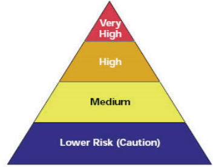

This is the latest version of this General Notice.
South Africa
Mine Health and Safety Act, 1996
Guideline for the Compilation of a Mandatory Code of Practice for the Mitigation and Management of COVID-19 Outbreak
General Notice 280 of 2020
- Published in Government Gazette no. 43334 on 18 May 2020
- Assented to on 18 May 2020
- Commenced on 18 May 2020
- [Up to date as at 18 May 2020]
Part A – The guideline
1. Foreword
2. Legal status of the guideline and codes of practice
3. Objectives of the guideline
The objective of this guideline is to assist employers as far as reasonably practicable to establish and maintain a COVID-19 prevention, mitigation and management programme at mines.4. Definitions and acronyms
"CIoM" means Chief Inspector of Mines;"confirmed case" means a person who has been diagnosed with COVID-19 by means of a laboratory diagnostic method approved by the Department of Health;"COP" means Code of Practice in terms of section 9 of the MHSA;"COVID-19" means Corona Virus Infection Disease 2019 caused by the severe acute respiratory syndrome corona virus 2 (SARS-CoV-2);"Disinfect" means the process of cleaning using chemicals to destroy microorganisms;"DMRE" means the Department of Mineral Resources and Energy;"DOH" means the Provincial Department of Health;"EAP" means Employee Assistance Programme;"Employee" means any person who is employed or working at a mine (including the mine's contractors);"Exposure" means the state of having no protection from something harmful, for purposes of this guideline exposure is in reference to SARS-CoV-2;"health care worker" means all healthcare professionals primarily engaged to enhance health by providing preventative, curative, promotional or rehabilitative health care services;"Isolation" means separating a sick individual with a contagious disease from healthy individuals that are not infected with such disease in a manner that aims to prevent the spreading of infection or contamination;"MHSA" means Mine Health and Safety Act, 1996 (Act No 29 of 1996) as amended;"MHSC" means the Mine Health and Safety Council, established in terms of section 41(1) of the MHSA;"NDOH" means National Department of Health;"NICD" means National Institute for Communicable Diseases;"OMP" means a medical practitioner who holds a qualification in occupational medicine or an equivalent qualification, recognised by the Health Professions Council of South Africa;"PPE" means Personal Protective Equipment;"PUI" means Person Under Investigation;"Quarantine" means the restriction of activities or separation of a person, who was or may potentially be exposed, to COVID-19 and who could potentially spread the disease to other non-exposed persons, to prevent the possible spread of infection or contamination to healthy individuals; with the objective of monitoring their symptoms and ensuring the early detection of cases;"RTW" means Return to Work;"SAMI" means South African Mining Industry;"Self-Isolation" means separating yourself from others to the greatest extent possible, when you are sick with signs of COVID-19 and you have been told by a health care provider to separate yourself from others;"Vulnerable employees" means Employees with known or disclosed health issues or comorbidities or with any condition which may place such employees at a higher risk of complications or death if they are infected with SARS-CoV-2; also employees above the age of 60 who are at a higher risk of complications or death if they are infected with SARS-CoV-2; and"WHO" means World Health Organization.5. Scope
6. Members of the task team
| State | Organised Labour | Employers |
|---|---|---|
| Dr L. Ndelu | Mr. J. Kok | Dr. T Balfour |
| Dr D. Mokoboto | Mr. D. Blaauw | Mr. B Mongoma |
| Ms C. Kekana | Ms S. Nongingi | Mr. J Oosthuyzen |
| Ms D. Mahlaba | Mr. A. Hlakoana | Dr K. Baloyi |
| Ms M. Hlapane | Mr. T Letanta |
Part B – Author’s guide
1. The COP must, where possible, follow the sequence laid out in Part C: Format and content of the COP. The pages as well as the chapters and sections, must be numbered, where possible, to facilitate cross-referencing. Wording must be unambiguous and concise.2. It must be indicated in the COP and on each annexure to the COP whether:2.1.The annexure forms part of the COP and must be complied with or incorporated in the COP or whether aspects thereof must be complied with or incorporated in the COP; or2.2The annexure is merely attached as information for consideration in the preparation of the COP (i.e. compliance is discretionary).3. When annexures are used, the numbering must be preceded by the letter allocated to that particular annexure and the numbering must start at one again. (e.g. 1, 2, 3 and A1, A2, A3).4. Whenever possible illustrations, tables, graphs and the like, must be used to avoid long descriptions and/or explanations.5. When reference has been made in the text to publications or reports, references to these sources must be included in the text as footnotes or side notes as well as in a separate bibliography.Part C – Format and content of the mandatory COP
1. Title page
The COP must have a title page reflecting at least the following:1.1The name of the mine;1.2The heading: "Mandatory Code of Practice for the prevention, mitigation and management of COVID-19 outbreak";1.3A statement to the effect that the COP was drawn up in accordance with guideline DMRE16/3/2/5-A3 issued by the COP;1.4The mine reference number for the COP;1.5The effective date;1.6The revision dates (if applicable); and1.7The DMRE mine code number.2. Table of contents
The COP must have a comprehensive table of contents.3. Status of the mandatory code of practice
4. Members of the drafting committee.
5. General information
General relevant information relating to the mine must be stated in this section of the COP, which must include at least the following:6. Terms and definitions
Any word, phrase or term of which the meaning is not absolutely clear, or which will have a specific meaning assigned to it in the COP, must be clearly defined. Existing and/or known definitions must be used as far as possible. The drafting committee must avoid jargon and abbreviations that are not in common use or that have not been defined. The definitions section must also include acronyms and technical terms used.7. Risk management
8. Key elements to be addressed in the COP
The following key elements must be addressed in the COP:8.1Risk assessment and review8.2Start-up and on-going procedure for mines8.3COVID-19 Management Programme8.4Monitoring and reporting8.5Compensation for occupationally acquired novel corona virus (COVID-19)8.1Risk assessment8.1.1In terms of Section of 11 of the (MHSA), the employer must assess and respond to risk.8.1.2The employer is required to conduct a risk-based assessment covering all workings at mines and the risk assessment should be described with reference to but not limited to:8.1.3All sources of SARS-CoV-2 infection transmission.8.1.4Health effects associated with exposure to SARS-CoV-2.8.1.5Nature of the key workplace operations and activities that pose all potential risk of SARS-CoV-2 transmission.8.1.6Occupations and number of employees who are likely to be exposed to and spread the SARS-CoV-2.8.1.7Mines essential occupations or critical skills that might be impacted by SARS-CoV-2 transmission.8.1.8The risk of vulnerable employees to SARS- CoV- 2 while at work.8.1.9Control measures in place, i.e. engineering, administrative, personal protective equipment etc.8.1.10De-densification of employees on transport modes and other spaces.8.1.11The additional control measures required to be instituted in order to reduce exposure and the spread of SARS-CoV-2, such as the review of Human Resource policies around business travel, sick leave, and other related policies to account for SARS-CoV-2.8.1.12Frequency of any ongoing monitoring to assess the effectiveness of the controls mentioned above.8.1.13The mine's risk assessment methodology to take cognisance of the WHO classification of the risk of SARS-CoV-2 infection into 4 risk groups, which are illustrated by the following below Figure 1:
(i)Very high exposure riskHigh potential for exposure to known or suspected sources of SARS-CoV-2 during specific medical, post-mortem, or laboratory procedures.(ii)High exposure riskHigh exposure risk jobs are those with high potential for exposure to known or suspected sources of SARS-CoV-2.(iii)Medium exposure riskMedium exposure risk jobs include those that require frequent and/or close contact with i.e., within 2 meters of people who may be infected with COVID-19, but it is unknown.(iv)Low exposure riskLow exposure risk jobs are those that do not require contact with people known to be or suspected of being infected with COVID -19 nor frequent contact (within 2 metres) with the general public.NOTE: The attached Annexures 1 - 3, can be utilized by employers for the purpose of conducting COVID-19 risk assessment.8.1.14Scientific and evidence-based approachIn implementing any solution driven measure, the employer must aim to apply the best available evidence gained from scientific methods for decision making in preventing exposure SARS-CoV-2.8.1.2.Review of the risk assessment8.1.2.1The employer must review the risk assessment regularly and whenever circumstances arise or change at the mine that could have an impact on the original assessments and the risk of contracting COVID-19 and at least in the following instances when:(i)Outcomes of local outbreaks or community surveillance become known to the mine.(ii)Outcomes of medical surveillance programmes indicate the need for it;(iii)a MHSA Section 11(5) investigation and /or any other investigation/s indicates the need;(iv)New or revised legislation is introduced;(v)New mining methods are introduced;(vi)Process changes are introduced (e.g. in process plants);(vii)New types of machinery are introduced; and(viii)New epidemiological, public health and medical information on the infection, spread of, symptoms or any other relevant information comes to light in respect of the pandemic that may influence the risk assessment.| Classification | Mine employees at risk (This list is not exhaustive) |
|---|---|
| Very high risk | a) Intensive Care Unit b) Occupational health practitioners conducting cough inducing procedures, e.g. spirometry. c) HCWs collecting specimens for diagnosis of COVID-19, e.g. throat swabs. d) Ambulance personnel that do intubation into trachea. e) Health Care Employees (HCWs) that do removal of cardiorespiratory organs for autopsy. |
| High risk | a) HCWs that examine employees (at Occupational health centres, medical stations and other places with potential to be in contact with a COVID-19 patient (known and unknown), ambulance drivers transporting the sick. b) Underground employees who are in confined environments during waiting to be transported, during transportation to underground and to various working stations. c) Security staff at high volume access points or conducting temperature checks and/or alcohol testing. d) Health and Safety reps during investigation of underground working sites e) Hospital waste cleaners f) Change room attendants g) Cleaners involved in workplace disinfection e.g. Following the removal of a PUI and underground sanitation employees. |
| Medium | a) Security staff at entrances to facilities and mines b) Mine employees in work areas where social/physical distancing is possible and being practiced c) Change room cleaners d) Laundry staff e) Occupational hygienists -personal sampling procedures f) Clerks working at occupational health centres g) Human resource practitioners that interact very closely with people h) Office cleaners |
| Low risk | a) Office employees b) Control room operators |
Part D – Implementation
1. Implementation plan
2. Compliance with the code of practice
The employer must institute measures for monitoring and ensuring compliance with the COP.3. Access to the code of practice and related documents
History of this General Notice
-
18 May 2020 this version
Assented to by council.Published in Government Gazette no. 43334General Notice commences.
Download for later
Download the current version of this By-law to read later on your desktop, e-reader or tablet.
- Guideline for the Compilation of a Mandatory Code of Practice for the Mitigation and Management of COVID-19 Outbreak ePUB
- Guideline for the Compilation of a Mandatory Code of Practice for the Mitigation and Management of COVID-19 Outbreak HTML
- Guideline for the Compilation of a Mandatory Code of Practice for the Mitigation and Management of COVID-19 Outbreak PDF